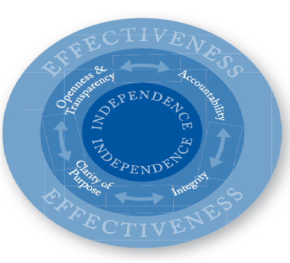

Home | Profile | Advocacy | Contact
© 2016 Landley Bernardo
The generic understanding of governance is the management
of resources and policy-making by means of exercising
authority (power).
In this sense, the term "governance" appears to be more and more used in order to denote a complex set of structures and processes (at the public as well as at the private level), which are generally associated with national administration. However, its definitions offer a rather broad horizon of interpretation: wherever we can find this term, its definition varies slightly. For instance, in the Report of the Commission on Global Governance
Good governance is also based on the transparency
of the decision-making process, which
ensures that information is freely available and
accessible to those involved or affected by the
decisions taken.
Transparency therefore means free access to information. Last, but not least, accountability and responsibility (of the institutions, just as much as of the civil society) are key requirements of good governance, with all of the participants in the political and economic processes being accountable for their decisions to each other.
People are more likely to have confidence in their local government if decisions are made in a transparent and accountable way. This helps people feel that local government will act in the community’s overall interest, regardless of differing opinions. It also encourages local governments to remember that they are acting on behalf of their community and helps them to understand the importance of having open and ethical processes which adhere to the law and stand up to scrutiny.
Encourages elected members and council officers to be confidentElected members and council officers will feel better about their involvement in local government when good governance is practised. Councillors will be more confident that they are across the issues, that they can trust the advice they are given, that their views will be respected even if everyone doesn’t agree with them, and that the council chamber is a safe place for debate and decision making. Officers will feel more confident in providing frank and fearless advice which is acknowledged and respected by councillors.
Leads to better decisionsDecisions that are informed by good information and data, by stakeholder views, and by open and honest debate will generally reflect the broad interests of the community. This does not assume that everyone will think each decision is the right one. But members of the community are more likely to accept the outcomes if the process has been good, even if they don’t agree with the decision. They will also be less tempted to continue fighting or attempting to overturn the decision. So even the most difficult and controversial decisions are more likely to stick.
Helps local government meet its legislative responsibilitiesIf decision-making is open and able to followed by observers, it is more likely that local governments will comply with the relevant legal requirements. They will also be less likely to take shortcuts or bend the rules.
Supports ethical decision makingGood governance creates an environment where elected members and council officers ask themselves "what is the right thing to do?" when making decisions. Making choices and having to account for them in an open and transparent way encourages honest consideration of the choices facing those in the governance process. This is the case even when differing moral frameworks between individuals means that the answer to "what is the right thing to do" is not always the same.
This Guide to principles of good governance is one of high-level principles which reflects this diversity and is intended to supplement the Criteria. We hope that this will be useful to schemes, prospective schemes and the wide range of stakeholders with an interest in Ombudsman matters. Six principles have been identified and briefly defined. The Guide then goes on to a brief analysis of each, identifying the characteristics which distinguish that particular principle and which make it appropriate to the governance of an Ombudsman scheme, all the time bearing in mind that these principles are in fact interdependent.
The following diagram illustrates the relationships between the principles of good governance, with ‘independence’ at the core, surrounded by four supporting principles, and ‘effectiveness’ surrounding them all.
| The six principles | |
|---|---|
| Interdependence | Ensuring and demonstrating the freedom of the office holder from interference in decision making |
| Openness and transparency | Ensuring openness and transparency in order that stakeholders can have confidence in the decision-making and management processes of the scheme |
| Accountability | Ensuring that all members of the scheme, including the office holder, staff members and members of any governing body, are seen to be responsible and accountable for their decisions and actions, including the stewardship of funds (with due regard to the independence of the office holder) |
| Integrity | Ensuring straightforward dealing and completeness, based on honesty, selflessness and objectivity, and ensuring high standards of probity and propriety in the conduct of the scheme’s affairs and complaint decision making |
| Clarity of Purpose | Ensuring that stakeholders know why the scheme exists and what it does, and what to expect from it |
| Effectiveness | Ensuring that the scheme delivers quality outcomes efficiently and represents good value for money |
In the last twenty years, the concepts of "governance" and "good governance" have become widely used in both the academic and donor communities. These two traditions have dissimilar conceptualisations. First, there is the academic approach, which focuses mainly on the study of the different ways in which power and authority relations are structured in a given society. Second, there is the donor community's approach, which puts emphasis on the role state structures play in ensuring social, economic and policy equity and accountability through open policy processes.
The concept of good governance emerged mainly because practices of bad governance, characterized by corruption, unaccountable governments and lack of respect for human rights, had become increasingly dangerous, and the need to intervene in such cases had become urgent. Good governance has become an important element of the political and economic agendas, and has meanwhile been better specified along with the proliferation of good practices that take the concept into consideration. Beyond entailing just multiparty elections, a judiciary and a parliament, which have been identified as primary components of Western-style democracies, good governance goes on to address several other central issues:
A question of critical importance is how far can the concept actually go? The answer to this question can be found in practice rather than just in theory; although the focus is on the public sector, where capacity building is called upon in order to strengthen and develop the social and economic situation, the concept applies to the private sector and the civil society, as well. When talking about good governance, what is generally referred to is the ability to perform efficiently, effectively and responsively, guided by principles that are feasible and desirable at all levels of the society, not just at the political one. As noticed in research material, reports and studies on the subject, good governance is a notion that refers to, and is functional in, a number of domains, going from institutional development to non-state actors' involvement.
Most Boards accept and practice basic conventions of board governance, such as establishing a Board charter, following accepted policies, and keeping accurate minutes. The National Association of Corporate Directors (NACD) makes several more recommendations for effective leadership:
Establish a Governance or Nominating Committee.This committee should is responsible for appointing members to the board and evaluating its effectiveness.
Create independent leadership roles.While many organizations still allow their Chief Executive Officer (CEO) to act as Chairperson, the NACD recommends appointing an independent Chairperson. This promotes unbiased decision-making and a balance of power. Other leadership positions could also be established, such as a Co-chair, Treasurers, etc. to further balance power and build the capacity of the board’s members.
Encourage members to help set meeting agendas.Input from all members of the board is imperative, but often important topics are never introduced. It’s important for members to be active in setting the agenda, so the topics they feel are important are given due consideration.
Establish a three-tier evaluation process.In The Modern Board of Directors, we explain how a board’s responsibilities include evaluation of senior managers as well as the board’s own effectiveness. The NACD suggests adding a third layer – an evaluation process for individual directors. This will help ensure every member of the board is contributing equally.
Access outside advice.Many boards decide to secure the services of an external party to build capacity or help solve a problem. Navigating this process can be tricky, but it is easier when both the independent directors and senior management feel involved in the selection process. It is not only managers that can benefit from consulting or other services– the Board itself may need guidance. Though it’s natural to feel defensive, board members need not see getting advice as a sign of weakness. In fact, it’s an opportunity for the entire organization to grow even stronger.
Link board member compensation to the organization’s success.In some boards, members receive a form of compensation for their service: a stipend, health benefits, or stock options. The NACD suggests that stock options are most effective because they tie the Director’s compensation to the organization’s success